前言
谈到性能优化，我们时常会想到：
- 压缩外部资源
- 对JavaScript进行分包
- 对各种外部资源进行懒加载
- 请求链路上的优化（缓存，cdn，http2诸如此类）
但是说这么多的优化手段，我们到底在优化什么？加载时间是多少才算作快？用什么作为我们优化的参照物呢？ 当我们接收到一个性能优化的任务，用什么去衡量成果？
今天主要借助 lighthouse 对网站整体进行评估，针对 lighthouse 给出的完善建议，做一些优化。
lighthouse面板
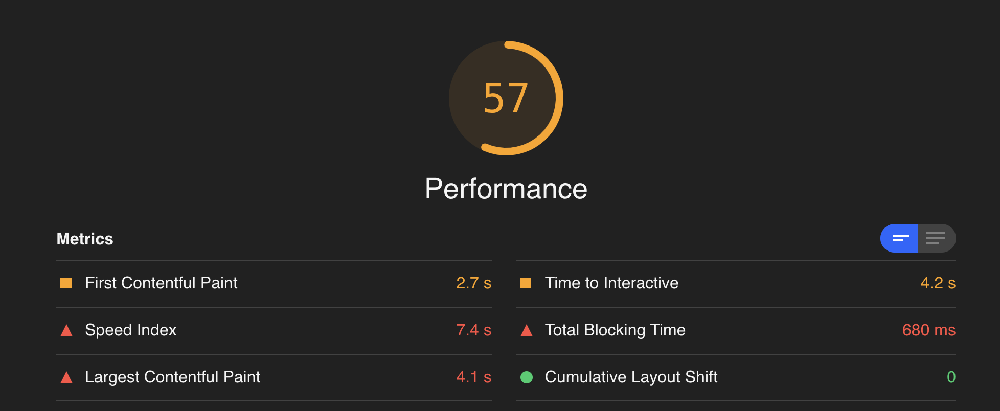
「First Contentful Paint」 首屏渲染时间，Chrome会取第一个渲染出来的元素作为时间参考。
「Time to Interactive 」页面资源加载成功并能响应用户交互的时间点
「Speed Index」 首屏展现时间
「Total Blocking Time」FCP到TTI之间,主线程被long task(超过50ms)阻塞的时间之和
「Largest Contentful Paint」 页面中最大内容元素渲染的时间点。
「Cumulative Layout Shift 」元素移动所累积的时间点，比如有一个absolute的元素突然从左边移到了右边。
Core Web Vitals
谈到用户体验与性能指标,顺便提下Core Web Vitals. 2020年5月,Google针对网站使用体验推出了一套核心指标标准(Core Web Vitals).由三项指标构成:
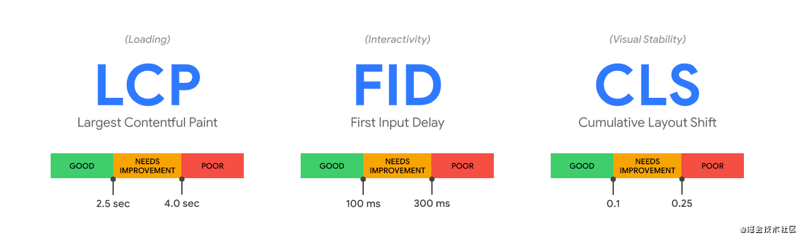
为什么不是别的指标呢 ? 因为这套标准主要从以下三个维度进行评估:
- [加载情况] : LCP
- [交互性] : FID
- [视觉稳定性] : CLS
改善建议
方案就主要以性能指标作为维度,主要分为以下几个点:
- 视觉稳定性 (Cumulative Layout Shift)
- 加载情况 (Largest Contentful Paint)
- TTI (Time to Interactive)
- TBT (Total Blocking Time)
- FCP (First Contentful Paint)
1. 视觉稳定性 (Cumulative Layout Shift)
1.1 优化未设置尺寸的图片元素
改善建议里提到了一项优先级很高的优化就是为图片元素设置显式的宽度和高度,从而减少布局偏移和改善CLS.
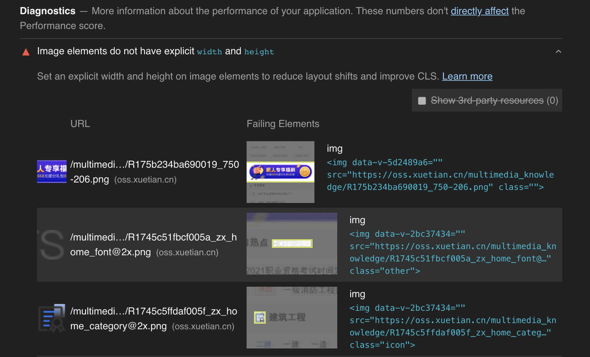
1.2 避免页面布局发生偏移
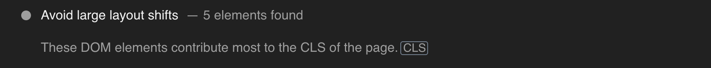
1.3 避免非合成动画
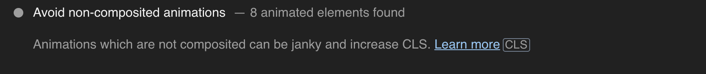
改善建议中提到应避免使用非合成动画，非合成动画会使得页面变得混乱并增加CLS。关于这个优化建议我觉得应该具体场景具体分析，不应该”因噎废食”。毕竟目前能被composited的css属性只有transform & opacity。当然这也在提醒我们平时在做CSS动画时应注意优化 (比如常见的使用transform替代top)。
参考资料：
2. 加载情况 (Largest Contentful Paint)
2.1 消除渲染堵塞的资源
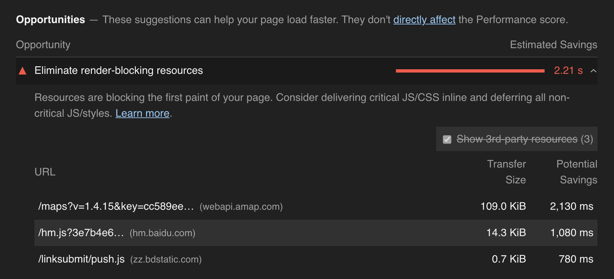
第一个是高德地图的js sdk，改成在需要的页面动态添加script标签引入这个js。
如果是全局使用的文件，也可以考虑defer进行异步加载。
2.2 移除未使用的 CSS/JavaScript
考虑一下按需引入和CDN
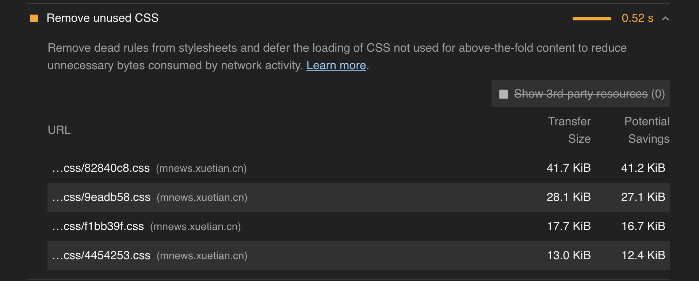
查看了几个css文件后，都有一段设置间距的公共样式。排查发现，这段样式写在mixin里，几乎被所有组件引用。
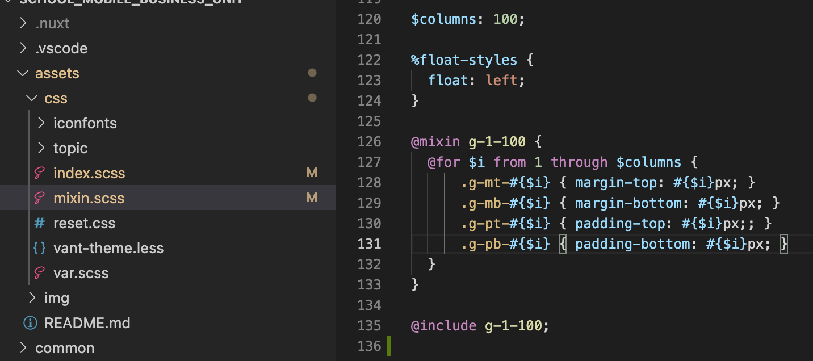
解决方案： 移至全局样式文件 index.scss
3. TBT (Total Blocking Time) / TTI (Time to Interactive)
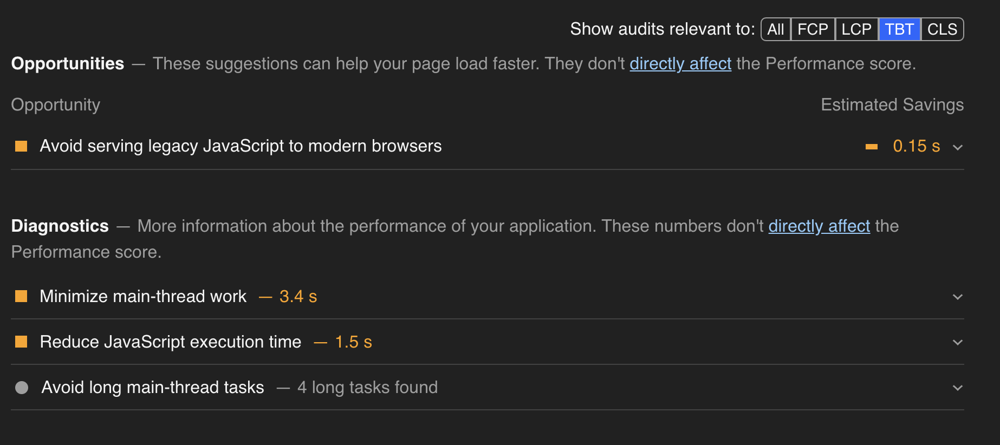
Reduce JavaScript execution time 减少js的执行时间
当JavaScript执行时间超过2秒时，Lighthouse将显示警告。执行时间超过3.5秒时，审核将失败
建议（这些webpack都有相关的配置）：- 拆分代码
- 缩小并压缩代码
- Tree shaking
- 使用缓存代码
优化构建bundle体积
查看基于webpack-bundle-analyzer生成的体积分析报告
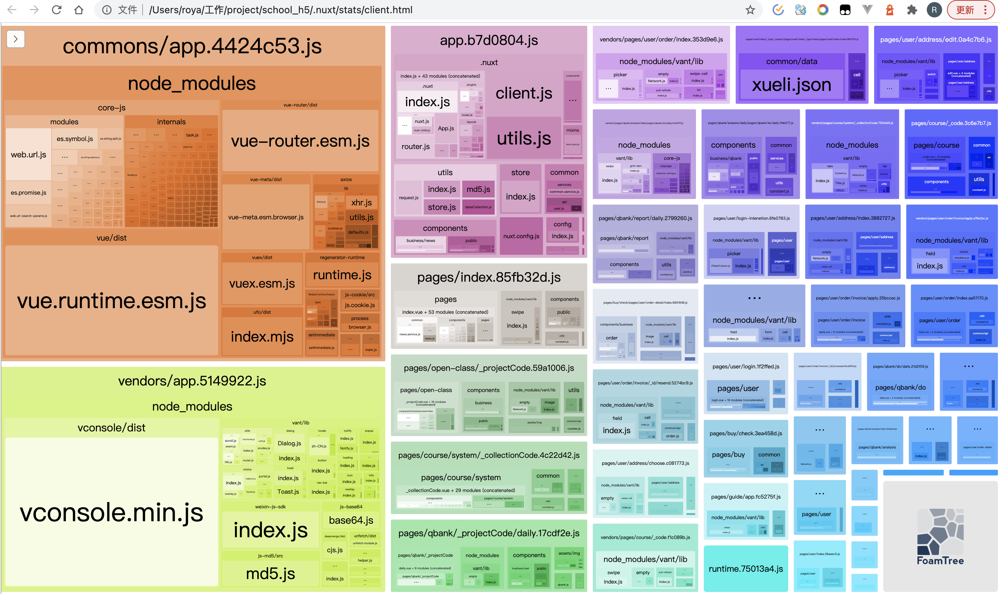
4. 其他
4.1 使用下一代图片编码格式使用图片
这里指的是webp格式，显然下面的图片没压缩，应该是运营上传的时候没压缩，可以考虑管理平台支持。
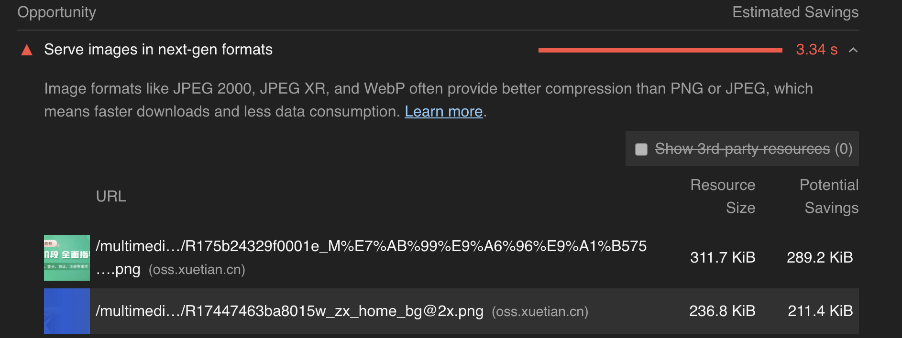
4.2 图片懒加载
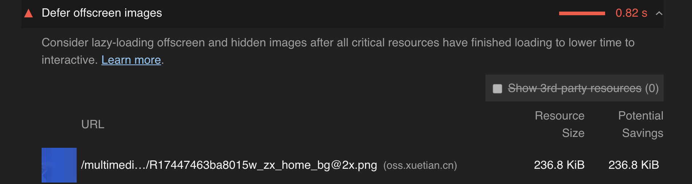
4.3 定制合理的缓存策略
对于不常改变的静态资源比如说css、image等可以进行缓存
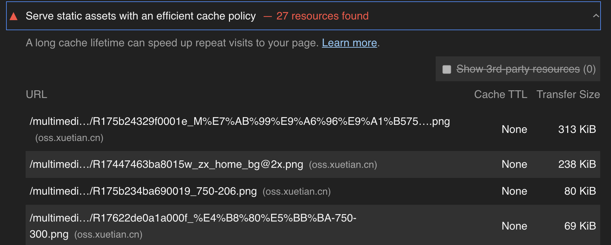